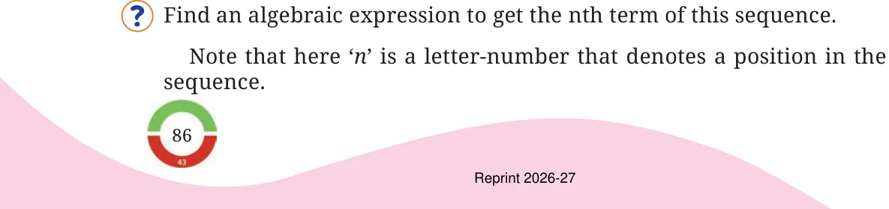

Look at this number sequence:
4, 8, 12, 16, 20, 24, 28, ...
How can we describe this sequence or pattern? Easy: These are the numbers appearing in the multiplication table of 4 (multiples of 4 in an increasing order).
What is the third term of this sequence? It is \(4 imes 3\).
What is the 29th term of this sequence? It is \(4 imes 29\).
Find an algebraic expression to get the nth term of this sequence.
Note that here 'n' is a letter-number that denotes a position in the sequence.

As it is the sequence of multiples of 4, it can be seen that the nth term will be 4 times n:
\(4 imes n\)
As a standard practice, we shorten \(4 imes n\) to \(4n\) by skipping the multiplication sign. We write the number first, followed by the letter(s).
Find the value of the expression \(7k\) when \(k = 4\). The value is \(7 imes 4 = 28\).
Find the value that the expression \(5m + 3\) takes when \(m = 2\).
As \(5m\) stands for \(5 imes m\), the value of the expression when \(m = 2\) is \(5 imes 2 + 3 = 13\).